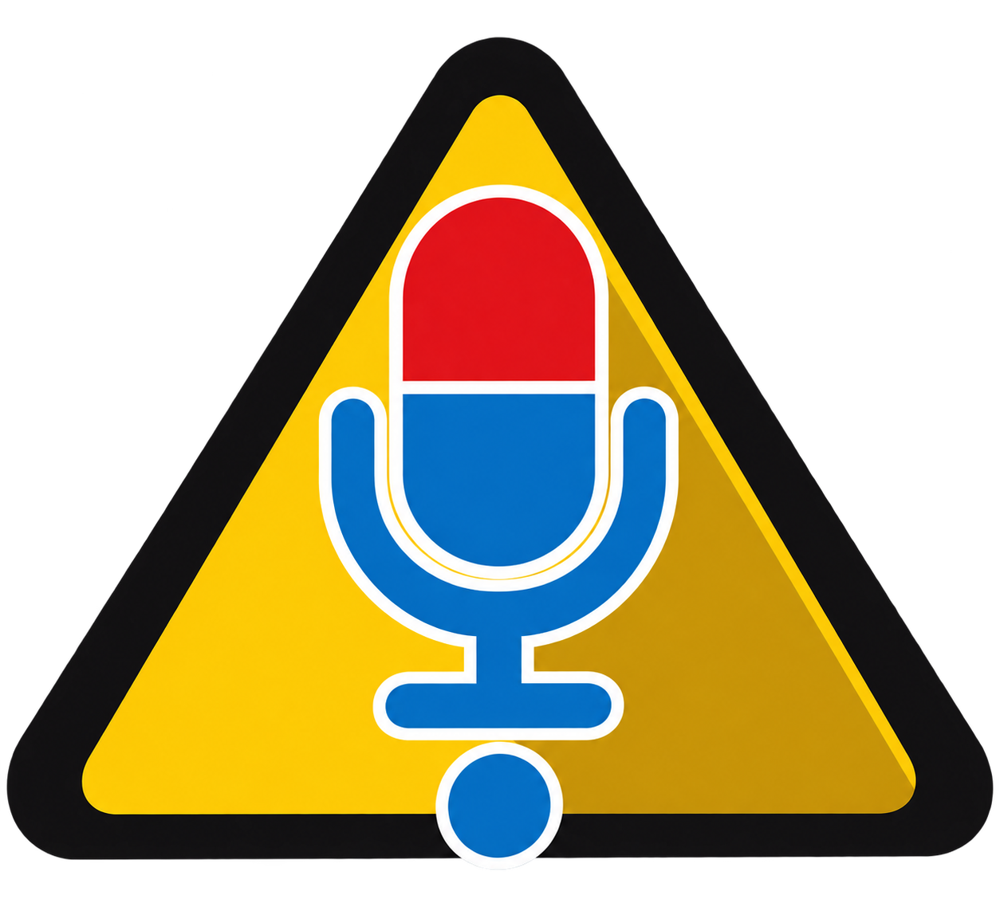

Audio Detection
Acoustic sensors capture environmental sounds and identify potential gunshot events.
arrow_outward
AudioSegWe believe technology should do more than collect information. It should turn data into action, awareness and protection.
AudioSeg uses sound analysis to detect potential gunshots and determine their geographical location in real time.
Acoustic sensors capture environmental sounds and identify potential gunshot events.
arrow_outwardAudio information is processed to identify and classify relevant acoustic events.
arrow_outwardDetection data is used to estimate the geographical location of the event.
arrow_outwardDiscover how AudioSeg transforms acoustic information into actionable geographical intelligence.
Access the platform arrow_outward